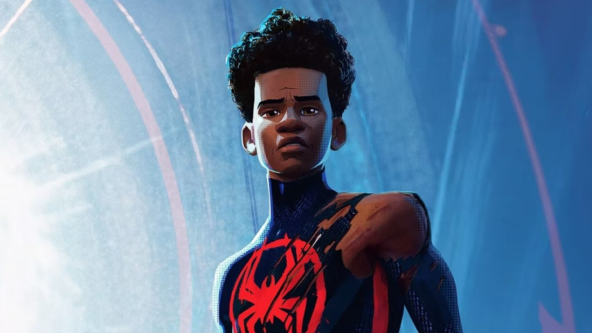
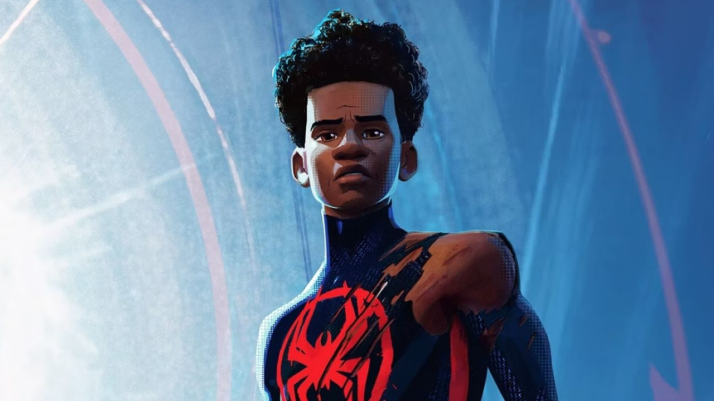

|  |  |
 |
| miles morales | gwen stacy | peter parker |
| eventos | noticias | contato |
O Homem-Aranha, o alter ego de Peter Parker, é um super-herói das revistas em quadrinhos publicadas pela Marvel Comics. Criado pelo escritor/editor Stan Lee e pelo escritor/artista Steve Ditko, o Homem-Aranha surgiu em Amazing Fantasy #15, durante a Era de Prata dos Quadrinhos.

|  | |
|
| miles morales | gwen stacy | peter parker |